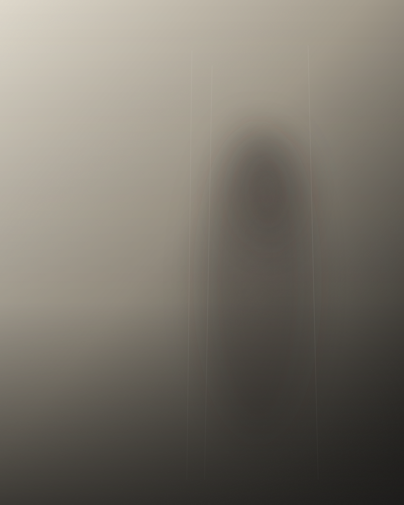
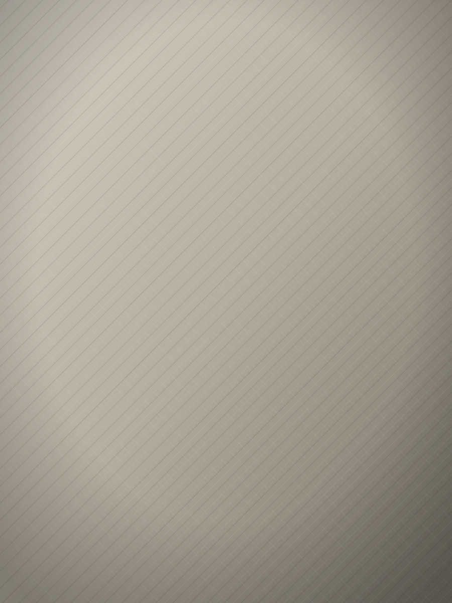
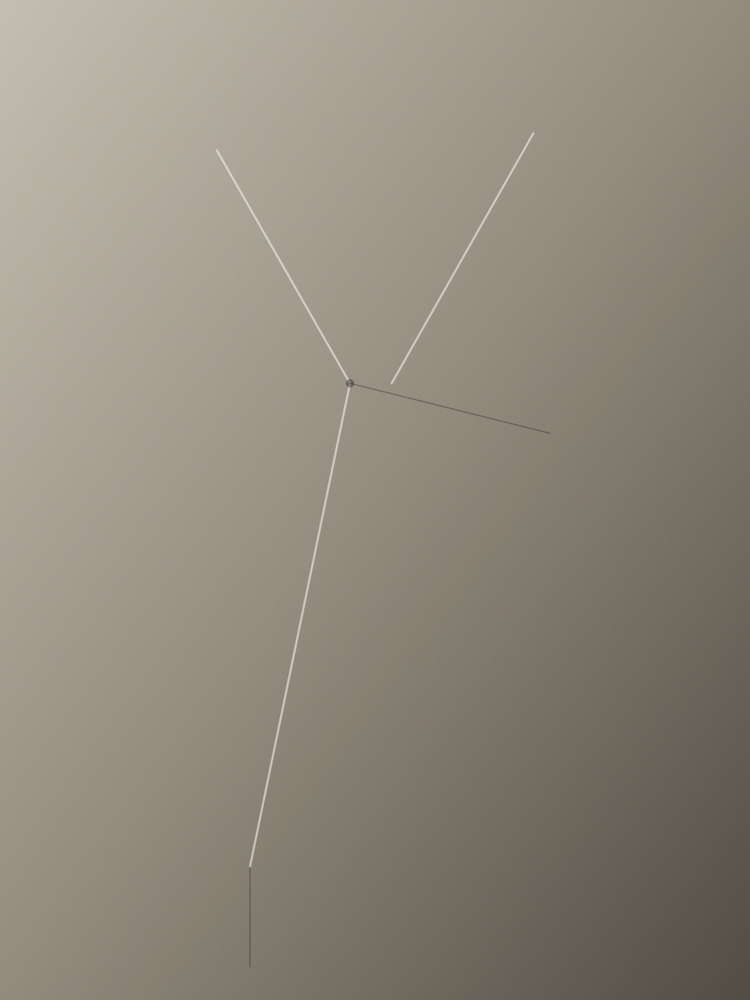

Concept
静けさを、
纏う。
装飾を削ぎ落とし、余白と素材そのものに語らせる。それが、TACETの服づくりの思想。
Our Story
削ぎ落とした先に、
確かな佇まいがある。
TACETは、装飾によって着る人を飾り立てる服ではなく、装飾を削ぎ落とすことで着る人自身の佇まいを際立たせる服を目指している。流行のディテールやロゴを前面に押し出すのではなく、線と比率、そして余白のバランスによって静かな強さを表現する。
素材選びにおいても同じ思想を貫く。上質なウールやシルクブレンドなど、経年によって表情を深める天然素材を中心に採用し、着るほどに手に馴染む質感を大切にする。派手な加工や装飾に頼らず、素材そのものが持つ質感と落ち感が、服の説得力になると考えている。
最終的にTACETが預けたいのは、服そのものではなく、それを纏う人の佇まいである。静けさの中にある確かな存在感——それこそが、TACETというブランドが目指す装いのかたちだ。
Our Commitments

01 — 素材
経年で表情を深める天然素材を選び抜き、着るほどに馴染む質感を大切にする。

02 — 仕立て
過剰な装飾を削ぎ、線と比率だけで語る。一枚の生地から生まれる静かな強さ。
03 — 佇まい
服は主張しすぎない。着る人自身の存在感を、静かに引き立てる余白であること。